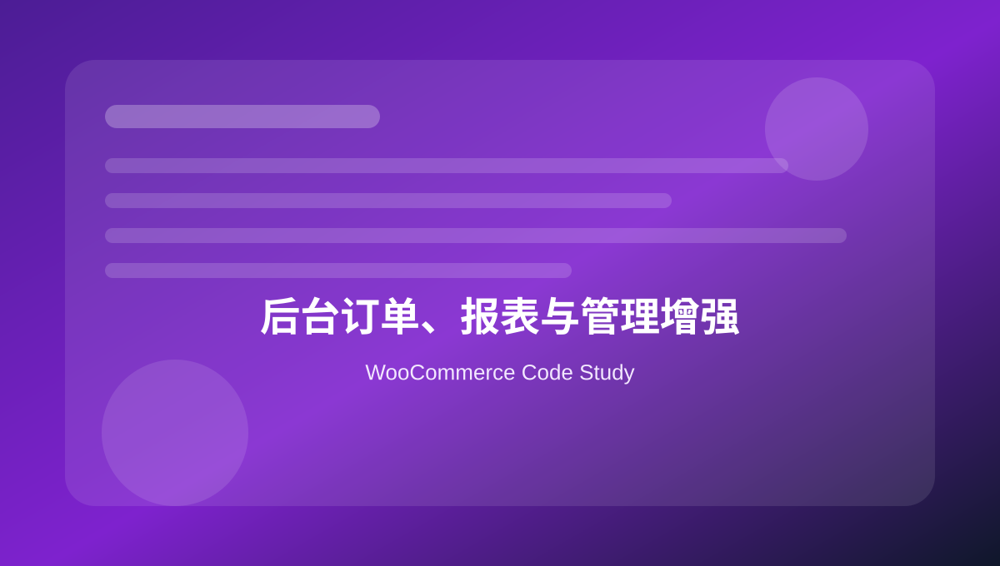

19 后台订单、报表与管理增强
整理后台订单列、筛选、批量操作、订单搜索、日志和 Analytics 数据扩展思路。

本页关键词
admin columns
bulk actions
order list
reports
logs
学习目标
- 会给后台订单列表加列
- 会添加订单筛选
- 会添加批量操作
- 会写 WooCommerce 日志
- 知道 HPOS 后订单后台不应依赖 posts screen 假设
代码使用提醒
本页代码用于学习和研究。复制到正式 WooCommerce 网站前，请先备份，并优先在测试环境验证。
凡是影响价格、库存、支付、订单、邮件和客户数据的代码，都需要完整测试购物车、结账、付款、退款、邮件和后台订单处理流程。
1. 后台订单列表增加列
后台 · php
<?php
function mywoo_shop_order_columns( $columns ) {
$columns['sales_owner'] = 'Sales Owner';
return $columns;
}
add_filter( 'manage_woocommerce_page_wc-orders_columns', 'mywoo_shop_order_columns' );
HPOS 订单管理页可能使用 wc-orders screen，列 hook 要注意环境。
2. 输出订单自定义列内容
后台 · php
<?php
function mywoo_shop_order_column_content( $column, $order ) {
if ( 'sales_owner' === $column && $order instanceof WC_Order ) {
echo esc_html( $order->get_meta( '_sales_owner' ) );
}
}
add_action( 'manage_woocommerce_page_wc-orders_custom_column', 'mywoo_shop_order_column_content', 10, 2 );
HPOS 下优先使用 $order 对象读取 meta。
3. 添加订单批量操作
后台 · php
<?php
function mywoo_order_bulk_actions( $actions ) {
$actions['mark_exported_to_erp'] = 'Mark exported to ERP';
return $actions;
}
add_filter( 'bulk_actions-woocommerce_page_wc-orders', 'mywoo_order_bulk_actions' );
批量操作适合订单导出、标记、分配跟进人等。
4. 处理订单批量操作
后台 · php
<?php
function mywoo_handle_order_bulk_action( $redirect_to, $action, $order_ids ) {
if ( 'mark_exported_to_erp' !== $action ) {
return $redirect_to;
}
foreach ( $order_ids as $order_id ) {
$order = wc_get_order( $order_id );
if ( $order ) {
$order->update_meta_data( '_exported_to_erp', 'yes' );
$order->save();
}
}
return add_query_arg( 'mywoo_exported', count( $order_ids ), $redirect_to );
}
add_filter( 'handle_bulk_actions-woocommerce_page_wc-orders', 'mywoo_handle_order_bulk_action', 10, 3 );
批量操作必须考虑权限和数据量。
5. 使用 WooCommerce Logger
运维 · php
<?php
$logger = wc_get_logger();
$logger->info(
'Order exported to ERP successfully.',
array(
'source' => 'mywoo-erp',
'order_id' => 123,
)
);
WooCommerce > Status > Logs 可查看 source 对应日志。
6. 后台订单页添加提示框
后台 · php
<?php
function mywoo_order_admin_notice() {
$screen = get_current_screen();
if ( $screen && false !== strpos( $screen->id, 'wc-orders' ) ) {
echo '<div class="notice notice-info"><p>处理订单前请确认付款状态和配送地址。</p></div>';
}
}
add_action( 'admin_notices', 'mywoo_order_admin_notice' );
后台提示适合规范团队订单处理流程。
本页总结
后台增强能大幅提升运营效率，但订单列表和批量操作要兼容 HPOS，并注意权限、性能和误操作风险。